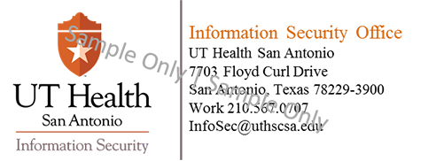
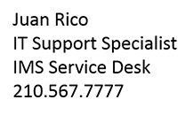
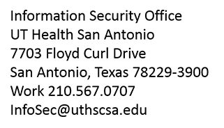
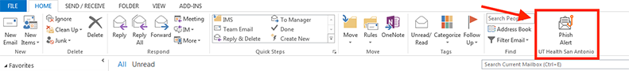
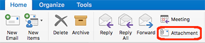

Phishing Prevention
Best Practices for Phishing Prevention at UT Health San Antonio
A phish is fraudulent email pretending to be from a genuine organization you may be familiar with, trying to convince you to give up sensitive information. It may appear to come from your bank, credit card agency, a loan institution, or even the University. The most common phishing seen at the University appears to come from our own email team or Service Desk, but is really someone intent on stealing our information.
Always question anything that asks for your username and password, or any other sensitive information. No one at the university will legitimately ask for that information. If someone does, they're trying to steal your data, misuse your resources, or both.
What do I watch for?
Sender's Email Address:
Look at the “From” line. If the address claims to be from the University or is generic, but doesn't end in uthscsa.edu, it is a phishing attempt. All email regarding University IT, email and security matters will come from a University email address. There are instances where an email can be forged or spoofed to look like an email address with uthscsa.edu. If the sender has an email address ending with uthscsa.edu but you spot the other signs in #2-4 below, there's a high chance that the email is a phish.
Body of the Email:
Messages in a phish usually don't flow very well and contain grammatical errors and spelling mistakes. Legitimate companies with whom you have established a relationship with will often send you emails with a personalized introduction, so if the email begins with a generic greeting like "Dear Customer" inspect the email for other signs of phishing.
Links and URLs:
If there are links in the message, don't click on them yet. Most phishing messages direct you to click on a link in the message to "verify your identity," but, instead send you to another website that tries to collect your information and even remotely compromise your computer. Before you click on any link, move your mouse pointer over the link, but do not click. Floating the mouse pointer over a link will show you the true destination of the link, regardless if the link says "Click here" or anything else.
Note: If you float your mouse pointer over a link and see owa.uthscsa.edu in the initial part of the URL,
make note that Outlook Web Access (OWA) rewrites links to go through a redirector on the OWA server for
security reasons. The redirector (/redir.aspx) obfuscates or obscures the mailbox name that would otherwise
be in the HTTP headers. Use extreme caution since there is no way to verify the actual destination of the
link. Here is an example of a URL that starts with owa.uthscsa.edu but redirects the user to a malicious
website:
https://owa.uthscsa.edu/owa/redir.aspx?REF=R6ar7sGrF7Rpo8gamvf7bWrBVWwMhO10yjTQd
Sense of Urgency:
Does the message include some form of threat? Phishing messages try to generate a sense of urgency by telling you something bad will happen if you don't comply, the most common being that your account will be blocked or canceled.
When in doubt, call the IMS Service Desk for assistance at 210-567-7777 to help you determine if an email you received is a phishing email.
-
Official signature blocks
All messages coming from the Information Management and Services (IMS) technology offices will have signature blocks like the ones below.
Example 1
Example 2
Official signature blocks will have the following minimum elements:
- An official UT Health San Antonio logo on the left
- The sender's name
- A contact telephone number; use this number to validate the message
The examples above have been watermarked to keep them from being copied and used in a phish.
Many phishing messages claim to come from the "IT Help Desk". The official name of the department is "IMS Service Desk", as shown in Example 1. Example 2 shows a signature block sent on behalf of the Information Security Office.
E-mail systems set up to receive text-only messages (no images) will show the text of the signature blocks only, without the logos. See Example 3 and Example 4.
Example 3
Example 4
-
What do I do if I get a phish?
- Don't click on anything inside the message. Many times, the entire body of the message is a link to a website outside the university, usually a compromised site that will try to infect your computer. This also applies to any attachments, as they can be infected, as well.
- Forward a copy of the phish to the phishing response team as an attachment. Sending the original message as an attachment preserves the background information from the message, showing where the email really originated. This also allows the email team to block the message from coming in again. Additionally, it gives us the ability to find others who received the message and may have clicked on any viral links.
Send the phish as an attachment by following these steps:
Outlook for Windows, Mac or Outlook Web App (OWA)
- Go to your inbox.
- Click ONCE on the suspicious email.
- Click the "Phish Alert" button in the Home tab.
 - A pop-up window will ask if you would like to report the phishing email, click "Yes".
If the Phish Alert button does not appear on your Outlook banner, follow the instructions below to report phishing emails:
Outlook for Windows or Outlook Web App
- Go to your inbox.
- Click ONCE on the suspicious email and press "Ctrl-Alt-f".
- A new blank message will open with the original as an attachment; address it to spam@uthscsa.edu.
- Click "Send".
Outlook for Mac
- Go to your inbox.
- Click ONCE on the suspicious email.
- Make sure the Home tab is selected, then click the Attachment button.
 - A new blank message will open with the original as an attachment; address it to spam@uthscsa.edu.
- Click "Send".
Outlook for Livemail
Students with a Livemail account can submit a junk or phishing scam message to Microsoft:
- Create a blank email message
- Address the message to the Microsoft team that reviews messages, as follows:
- For junk messages: junk@office365.microsoft.com
- For phishing scam messages: phish@office365.microsoft.com
- Copy and paste the junk or phishing scam message into the new message as an attachment
- Click "Send".
-
What happens if I click on a link in the phish?
Clicking on a link in a phish sends you to a web site outside the control of the University. Many phishing sites are well-researched and well-designed to look like the real thing, and some just put fields for the data they want to steal. In either case, many of those sites also have applications running in the background, silently probing your computer for a way in. Your computer could be infected and you wouldn't necessarily know it; this is referred to as a "drive-by infection."
- If you click on a link in a phish, immediately back out of the page and close your browser.
- Call the Service Desk, 210-567-7777 and let them know you clicked on the link in the phish. They will make arrangements with your IT Partner or technical support to have your computer scanned and, if necessary, cleaned.
- After you call the Service Desk, save your work, backup your data, and log out of your computer. If you did get a drive-by infection, these actions will minimize the effect of the malware on your data; they will also reduce the probability of your computer infecting others on the network. Actions may also be taken to remotely remove your computer from the network.
- Once your computer has been scanned and cleaned by technical personnel, it is highly recommended you change any passwords of any accounts accessed from that computer. If your computer was remotely removed from the network, access will be restored at this time.
-
I already gave up my username and password. What now?
If someone has your University login credentials, that is, your username and password, anything you can do on your computer or the network, they can do. This puts the entire university at risk.
- If you haven't already been contacted by Information Security, notify the Service Desk by calling 210-567-7777. Send them a copy of the phish using the steps in "What do I do if I get a phish?" above.
- Your email account will be disabled to prevent it from being used for spam or for sending phishes to others.
- Your computer will be remotely removed from the network, in case it was compromised by malware from a drive-by infection; this protects the rest of the computers on the University's network.
- Your IT Partner or technical support will be notified and will be sent to scan your computer for malware and to clean or re-image it, if necessary.
- Once your computer has been verified as clean, arrangements will be made to re-enable your computer's connection to the network.
- After access has been restored, you will be required to change your password immediately, as the phisher has your old one. This cuts off the phisher's access to our network.
- Finally, your email access will be restored.
A note from Information Security: It's obvious from above that the best way to deal with a phish is to recognize it when you see it and to notify the appropriate personnel. Clicking in the phishing message or accidentally giving away your login credentials involves a great deal more work for everyone. It is a guaranteed loss of productivity while your computer is off the network and you can't get any work done. Also, once your computer is compromised, data loss or data theft are possible no matter how quickly technical support personnel gets your computer cleaned up.
-
How do I block senders in Outlook?
Blocking someone doesn't stop their email from coming to your mailbox, but it does automatically move the message to your Junk Email folder where you can review it (in case it was blocked in error).
Click to view Microsoft's instructions on: How to block senders in Outlook
-
How do I block spam phone numbers and text messages on my phone?
If someone has already reached out to you by call or text message, you can block their phone number to prevent them from continuing to bother you. This article from DigitalTrends.com is a comprehensive guide to block spam phone numbers and text messages for iPhone and Android users:
https://www.digitaltrends.com/mobile/how-to-block-text-messages-in-ios-and-android/